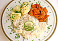

Der Spreewald ist die Heimat der Spreewaldgurken. Das meist krumme, grüne und vor allem gesunde Gemüse können Sie nach Herzenslust in allen Varianten probieren. An den Anlegestellen werden saure, scharfe, salzige und würzige Gurken direkt aus dem Holzfass angeboten. Das Gemüse begegnet Ihnen im gesamten Spreewald, aber sehen und erleben Sie selbst. Unbedingt probieren sollten Sie auch den Spreewälder Fisch, leckere Plinse mit Apfelmus oder Pellkartoffeln mit Quark und frisch gepresstem lausitzer Leinöl uvm... Und zum Nachkochen hier ein paar regionale Rezepte aus Großmutters Kochbuch…Viel Spaß.
-
Schmorgurken
-
Quark, Leinöl & Pellkartoffeln
-
Grützwurst (Filling)
-
Tafelspitz
-
Schnellgurken
-
Plinse
-

Spreewälder Fischtopf
-
Soljanka
-
Eier in Senfsauce
-
Vegetarisches Schmalz